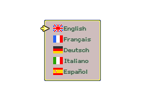

Mario & Luigi - Superstar Saga (Europe) (En,Fr,De,Es,It) (Virtual Console)
EEPROM 64K Save Format Mapped (Family Spec) 📺 Joybus 💾 MultiBoot 🎮 4P Link
Cartridge Identity
- Game Code
A88P(FamilyA88)- Header Title
MARIO&LUIGIP- Maker / Revision
01/ rev0- ROM Size
- 16.0 MiB (16,777,216 B)
- Save Media
EEPROM 64K- SHA-256
017565a819014087f1a13144a7d57f0305757062cb528f79f58b4be1b8c484c8- Engine / SDK Group
comm-001(196 families)
Screenshots

Link Cable & Multiplayer Communications
This title contains detected communication capabilities: 📺 Joybus 💾 MultiBoot 🎮 4P Link.
Detailed protocol specifications, SIO registers, Joybus commands, and MultiBoot sequences are documented in the Link & Multiplayer Reference.
- Multi-Player SIO (4P)
- 16-bit ring network · SIOCNT (
0x04000128) literals:0x019e34,0x019f1c,0x019f6c· SIODATA32/SIOMULTI0 (0x04000120) literals:0x01a7a0,0x01a814,0x01a888 - GameCube Joybus
- Register literal
REG_JOYCNT(0x04000140) at offset0x124c74 - GameCube Joybus
- Register literal
REG_JOYCNT(0x04000140) at offset0x12510c - GameCube Joybus
- Register literal
REG_JOY_RECV(0x04000150) at offset0x34c7cc - Single-Cart MultiBoot
- Single-Cartridge MultiBoot (Download Play) client/server handler · Thumb SWI 0x25 (
0xDF25):0x66e4a4,0xf6f326
Battery Save Format Specification (Family Shared)
This release shares its save architecture with canonical family reference Mario & Luigi - Superstar Saga (USA) (Family
A88).
Open Family Save Format Spec (A88E)Download save-format.json
- Canonical Specification
A88E· 4 mapped fields · 0 verified checksum(s) · Confidence: LOW- gbakit Built-In Support
- Built-in (A88E)
gbakit save verify A88E save.sav
gbakit save decode A88E save.sav
gbakit save fix A88E damaged.sav -o repaired.savObserved Battery Save Layout
- Fill Byte & Active Size
0xFFfill · 16–16 / 8,192 B active (entropy 1.92 bits/B)- Active Offset Ranges
0x0–0xF(1 total)- ASCII Magic / Headers
GPRLAM- Observed Variable Regions
- 0 bytes across 0 spans: None
- Candidate Checksum/Counter Spans
- None
Text, Fonts & Scene Data
- Primary Text Encoding
- Plain ASCII (uncompressed) (
21,988ASCII strings ·7Shift-JIS runs) - Font & VWF Indicators
- VWF Width Table 1bpp Font · BIOS SWIs: BitUnPack
0x10:0· LZ770x11/12:2· Huffman0x13:1· RLE0x14/15:1 - Scene & Packaging
66ROM pointer tables (≥32 entries,25≥200) ·84relativeu32TOCs ·241OAM metasprite hits
Password System
- Save Media
- Battery-Backed (EEPROM)
- Password Class
- Candidate Static Password Table (
candidate_static_table_no_ui) - Static Table(s)
0x1e263c·0x1e27bc
Hardware MMIO Subsystems
ppu_display0x80187bc,0x8019954,0x801dfc4,0x819a56c
Regional Variants & Revisions (Family A88)
- Maliou Yu Luyiji RPG (China) (Proto) (
A88C, 16 MiB) - Mario & Luigi - Superstar Saga (Europe) (En,Fr,De,Es,It) (
A88P, 16 MiB) - Mario & Luigi - Superstar Saga (USA) (
A88E, 16 MiB) - Mario & Luigi - Superstar Saga (USA) (Virtual Console) (
A88E, 16 MiB) - Mario & Luigi RPG (Japan) (
A88J, 16 MiB) - Mario & Luigi RPG (Japan) (Virtual Console) (
A88J, 16 MiB)